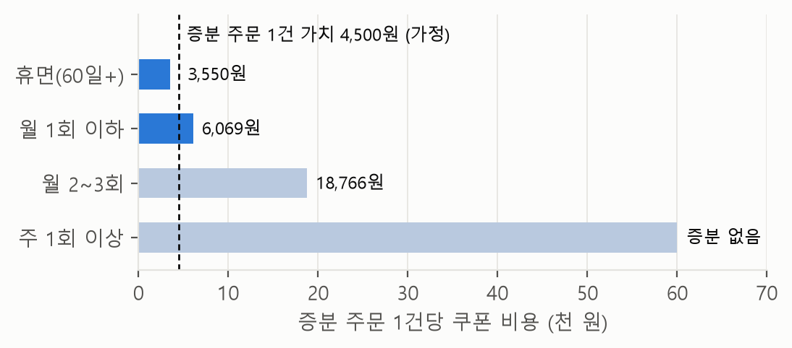
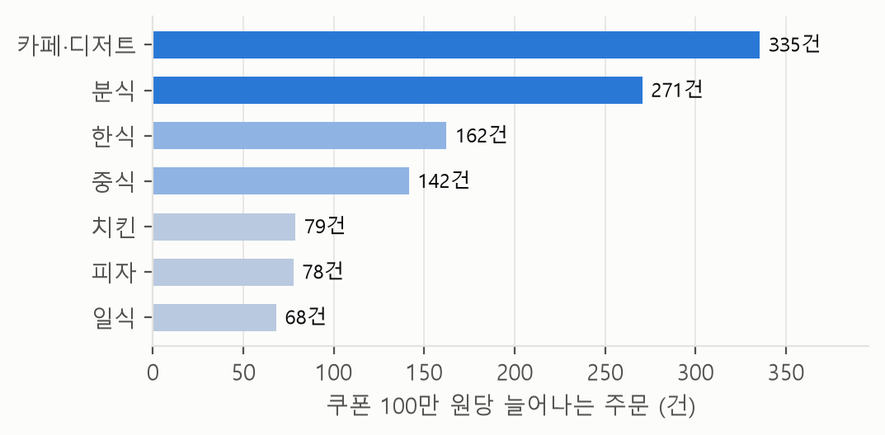
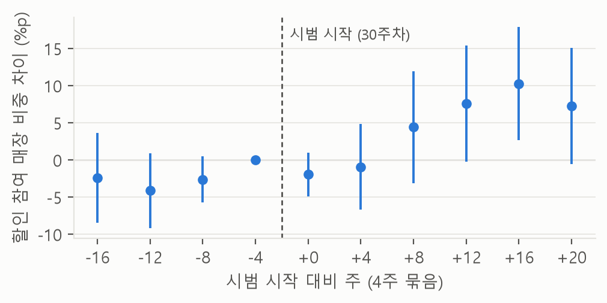
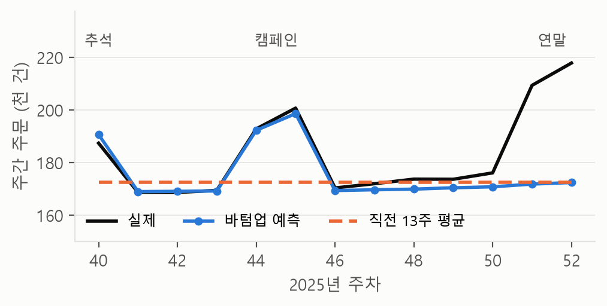

가상의 배달앱 SPOONLY의 매장 2,400곳·주문 8,197,268건(GMV 1,411.6억 원)을 시뮬레이션해, 사업전략·비즈니스 분석 담당자가 하는 일을 처음부터 끝까지 보여주는 포트폴리오입니다. KPI 정의 → 매장 세분화 → 쿠폰 증분 실험 → 카테고리별 할인 반응 → 비용 분담 시범 평가 → 분기 매출 예측 → 경영진 메모 순서입니다. 데이터에 함정 다섯 가지를 넣어 두었고, 모든 추정치를 참값과 대조했습니다(20개 중 20개 통과).
모든 데이터는 가상실제 회사·고객 정보 없음SQL(DuckDB) · Python(statsmodels) 코드 저장소측정된 두 권고(1·2번)를 합치면 분기당 쿠폰비 16.7억 원을 줄이고, 증분 주문 가치 기준 10.9억 원의 효과가 있습니다 (전 고객 확대안 대비, 증분 주문 1건 = 4,500원 가정). 이 가치를 3,000~7,500원 어느 값으로 잡아도 효과는 8.5억 원~13.2억 원으로 양수이고, 달라지는 것은 쿠폰 대상 범위입니다.
| 권고 | 주문 | 쿠폰비 | 가치 |
|---|---|---|---|
| 재주문 쿠폰: 전 고객 확대 대신 대상 한정 | -140,159 | −16.7억 원 | 10.4억 원 |
| 캠페인 예산 카테고리 재배분(실험 범위 안) | +12,316 | 0 | 5,542만 원 |
| 합계 | -127,844 | −16.7억 원 | 10.9억 원 |
| 증분 주문 가치 | 재주문 쿠폰 대상 | 50% 매칭 | 분기 효과 |
|---|---|---|---|
| 3,000원 | 보내지 않음 | 안 남음 | 13.2억 원 |
| 4,500원 | 휴면 | 안 남음 | 10.9억 원 |
| 6,000원 | 휴면 | 남음 | 9.0억 원 |
| 7,500원 | 휴면 + 월 1회 이하 | 남음 | 8.5억 원 |
증분 주문 1건의 가치 = 수수료(약 1,700원) + 그 주문이 만드는 이후 재주문의 가치. 재주문 쿠폰 효과는 실험 고객 9만 명의 주문 비중으로 플랫폼 전체에 비례 확대했고(약 8.9배), 캠페인 재배분은 분기 1회 캠페인 기준입니다.
GMV = 주문 수 × 객단가, 주문 = 신규 + 재주문, 플랫폼 순수익 = GMV × 수수료 10% − 플랫폼 부담 할인. 캠페인 주에는 주문이 늘지만 주문당 순수익이 크게 줄어, '주문 수'만 보면 쿠폰이 늘 좋아 보입니다.
상반기 주문 수준(중앙값 기준)과 성장 잠재력(평점 4.4 이상·배달 36분 이내)으로 2,265곳을 네 등급으로 나눴습니다. 가입 1주차 매장 1,964곳의 횡단면 회귀(카테고리·지역·객단가 통제)로 레버 크기를 쟀습니다: 평점 0.1점당 주문 +4.2% [3.2%, 5.3%], 배달 1분 지연당 −1.5% [−2.1%, −0.9%].
| 등급 | 매장 | 하반기 GMV 비중 | 주간 주문 | 재주문 비중 | 평균 배달 | 운영 방향 |
|---|---|---|---|---|---|---|
| 핵심 주문 상위 · 평점 4.4+ · 배달 36분 이내 | 543 | 36% | 104 | 60% | 30.4분 | 매장 부담 할인 + 행사 노출, 플랫폼 보조는 캠페인만 |
| 성장 주문 하위 · 평점 4.4+ · 배달 36분 이내 | 433 | 11% | 37 | 60% | 30.6분 | 플랫폼 매칭(조건부) + 노출 지원 |
| 유지 주문 상위 · 평점 또는 배달 기준 미달 | 592 | 37% | 95 | 56% | 36.3분 | 배달 시간·평점 개선을 먼저, 보조는 축소 |
| 관리 주문 하위 · 평점 또는 배달 기준 미달 | 697 | 16% | 35 | 56% | 36.8분 | 운영 지표 개선 목표를 걸고 보조 없음 |
성장 기회: 배달 36분 초과 791곳을 32분으로 → 하반기 GMV 약 32.7억 원 상당 / 평점 4.3 미만 462곳을 4.3으로 → 약 11.6억 원 상당.
고객 90,000명 중 15%를 무작위로 빼고, 나머지에게 마지막 주문 후 3주가 지나면 쿠폰을 보냈습니다. 쿠폰이 쓰인 주문을 모두 효과로 치면 65,147건이지만, 홀드아웃과 비교한 실제 증분은 22,416건입니다. 주 1회 이상 주문 고객에게는 효과가 0과 구분되지 않습니다.

| 고객군 | 고객당 주문 차이(12주) | 쿠폰 사용 주문 | 증분 주문 | 증분 비중 | 증분 주문당 비용 |
|---|---|---|---|---|---|
| 주 1회 이상 | -0.018 | 8,232 | -221 | 0% | 증분 없음 |
| 월 2~3회 | +0.176 | 28,653 | 4,581 | 16% | 18,766원 |
| 월 1회 이하 | +0.417 | 20,428 | 10,098 | 49% | 6,069원 |
| 휴면(60일+) | +0.476 | 7,834 | 6,620 | 85% | 3,550원 |
| 전체 | +0.293 | 65,147 | 22,416 | 34% | 8,719원 |
각 주문 뒤 같은 고객의 다음 주문을 LEAD(week) OVER (PARTITION BY customer_id ORDER BY week)로 찾아, 4주 안에 다시 주문한 비율을 냈습니다(4주를 지켜볼 수 있는 34주차까지의 주문만). KPI 트리의 '재주문 비중'(주문 중 재주문의 몫)과 달리, 고객이 돌아오는 속도를 직접 봅니다.
쿠폰이 4주 재주문율을 가장 많이 올린 곳도 휴면 고객입니다.
| 고객군 | 홀드아웃 | 쿠폰 |
|---|---|---|
| 주 1회 이상 | 96.9% | 97.1% |
| 월 2~3회 | 67.5% | 68.0% |
| 월 1회 이하 | 27.6% | 30.9% |
| 휴면(60일+) | 8.2% | 12.2% |
세 지역에서 2주 단위로 쿠폰을 켜고 껐습니다(지역·주 고정효과). 쿠폰이 켜진 주에 신규 고객이 지역·주당 473명(+31%) 늘었습니다. 다만 쿠폰으로 늘어난 고객의 8주 재주문율은 22%로 자연 유입(38%)보다 낮아, 신규 고객 1명당 1.2만 원, 다시 주문한 신규 고객 1명당 5.2만 원이 듭니다.
관측치가 지역·주 24개뿐이라 회귀 표준오차를 그대로 믿기 어렵습니다. 그래서 '지역마다 4개 블록 중 2개를 켜는' 가능한 일정 210개(세 지역이 같은 일정인 경우 제외)로 효과를 다시 계산한 무작위화 추론을 함께 보고합니다: p = 0.029.
매장이 스스로 건 할인으로 효과를 재면 반응이 작게 나옵니다. 매장은 주문이 줄어든 주에 할인을 올리기 때문입니다(함정 1). 그래서 지역×카테고리 단위로 무작위 배정된 플랫폼 캠페인 쿠폰(0·5·10%)만으로 반응을 추정했습니다(매장·지역×주 고정효과).
같은 1원이라도 카페·디저트는 일식보다 약 4.9배 많은 주문을 만듭니다. 44~45주차 캠페인에서 하위 3개 카테고리 예산의 절반을 옮기면 상위 카테고리 평균 할인율이 5.4%에서 약 13.7%로 올라 실험 범위(0~10%)를 벗어납니다. 그래서 10%에 닿을 때까지만(28%, 5,856만 원) 옮기고, 받는 쪽 효율은 할인율이 오른 구간의 중간값으로 계산했습니다: 같은 예산으로 주문 12,316건(+3.1%).

| 카테고리 | 매장 자체 할인으로 잰 반응 | 캠페인 쿠폰으로 잰 반응 [95%] | 객단가 | 100만 원당 주문 |
|---|---|---|---|---|
| 카페·디저트 | 2.73 | 4.09 [3.82, 4.36] | 9,668원 | 335건 |
| 분식 | 2.80 | 3.70 [3.44, 3.96] | 11,089원 | 271건 |
| 한식 | 1.23 | 2.69 [2.42, 2.96] | 14,113원 | 162건 |
| 중식 | 1.06 | 2.64 [2.42, 2.86] | 16,189원 | 142건 |
| 치킨 | 0.74 | 2.18 [1.98, 2.37] | 24,334원 | 79건 |
| 피자 | 0.96 | 2.35 [2.00, 2.70] | 26,589원 | 78건 |
| 일식 | -0.19 | 1.60 [1.23, 1.98] | 21,355원 | 68건 |
반응 = 할인율 1당 로그 주문 변화(할인 10%p → 주문 약 e^(0.1×반응)배). 서울 서부 30주차 이후(비용 분담 시범)는 추정에서 뺐습니다.
서울 서부 성장 등급 매장(156곳)에 30주차부터 매장 할인의 50%(최대 5%p)를 플랫폼이 부담했습니다. 다른 지역 성장 등급 매장과의 이중차분(매장·주 고정효과, 매장 단위 군집 표준오차): 할인 참여 +6.6%p [1.3, 11.9], 주문 +7.7% [4.2%, 11.2%].
참여는 시작 후 8~12주에 걸쳐 늘었고, 시작 전에는 두 집단의 차이가 0 근처였습니다. 하지만 늘어난 주문 약 9,774건에 플랫폼 할인 5,755만 원이 들어, 증분 주문 1건당 5,888원입니다. 증분 주문 가치가 6,000원 이상이어야 지금 비율로 남으므로, 매칭 30% 셀을 추가해 비용 곡선을 확인한 뒤 확대를 권합니다.

매장별로 할인을 걷어낸 수요의 추세를 잡고, 명절 효과와 이미 정해진 캠페인 일정 × 카테고리 반응을 더해 주 단위로 합산했습니다. 추세 기간은 Q3 백테스트에서 고른 13주를 Q4에 그대로 적용했습니다(시험 기간을 보고 고르지 않음).
평소 주 오차는 1.2%(직전 13주 평균 1.4%)로 비슷하지만, 추석·캠페인 주 오차는 1.0%로 단순 평균(10.9%)보다 훨씬 작습니다. 40~50주 합계 오차는 −0.7%. 연말 급증은 학습 기간에 없던 패턴이라 −19% 놓쳤습니다(함정 5). 작년 데이터가 쌓이면 연간 계절성을 넣어야 합니다.

시뮬레이션 데이터라 모든 추정치를 생성에 쓴 참값과 비교할 수 있습니다. 분석 코드는 data/raw만 읽고, 참값(data/truth)은 이 표에서만 씁니다.
| 점검 | 추정 | 참값 | 결과 |
|---|---|---|---|
| 평점 0.1점당 주문 효과 | 0.042 | 0.041 | 통과 |
| 배달 1분 지연당 주문 효과 | -0.015 | -0.015 | 통과 |
| 재주문 쿠폰: 증분 주문당 비용 순위(휴면 최저) | 휴면(60일+) | 휴면(60일+) | 통과 |
| 재주문 쿠폰: 주 1회 이상 고객 효과 0과 구분 안 됨 | -0.018 | 0.0 | 통과 |
| 첫 주문 쿠폰: 신규 고객 증가율 | 0.309 | 0.32 | 통과 |
| 첫 주문 쿠폰: 쿠폰으로 늘어난 고객 8주 재주문율 | 0.225 | 0.22 | 통과 |
| 할인 반응(캠페인 기준) 카페·디저트 | 4.09 | 3.864 | 통과 |
| 할인 반응(캠페인 기준) 분식 | 3.699 | 4.262 | 통과 |
| 할인 반응(캠페인 기준) 한식 | 2.692 | 2.646 | 통과 |
| 할인 반응(캠페인 기준) 중식 | 2.642 | 2.471 | 통과 |
| 할인 반응(캠페인 기준) 치킨 | 2.176 | 2.243 | 통과 |
| 할인 반응(캠페인 기준) 피자 | 2.35 | 2.071 | 통과 |
| 할인 반응(캠페인 기준) 일식 | 1.605 | 1.359 | 통과 |
| 매장 자체 할인으로 잰 반응이 더 틀림(함정 1) | 7.0 | 7 | 통과 |
| 비용 분담 시범: 주문 효과(DiD) | 0.077 | 0.064 | 통과 |
| 첫 주문 쿠폰: 무작위화 추론(210개 일정) p < 0.05 | 0.029 | 0.05 | 통과 |
| 캠페인 재배분이 실험 범위(평균 10%) 안 | 0.1 | 0.1 | 통과 |
| 캠페인 재배분 증분 주문(참값 반응으로 재계산) | 12315.677 | 12963.422 | 통과 |
| 예측: 행사 주 오차가 단순 평균보다 작음 | 0.01 | 0.109 | 통과 |
| 예측: 연말 급증은 놓침(함정 5, 예상된 실패) | -0.194 | -0.18 | 통과 |